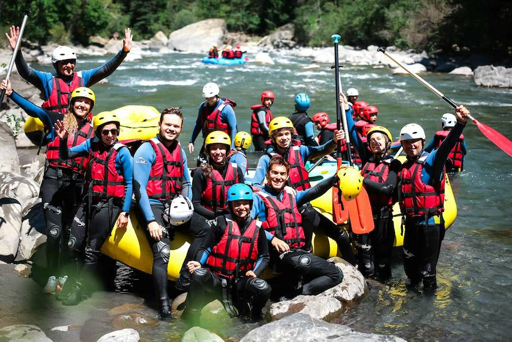

We are passionate about adventure and nature. Our team is dedicated to providing safe, exciting, and unforgettable rafting experiences in Guatemala’s most beautiful rivers.


We are passionate about adventure and nature. Our team is dedicated to providing safe, exciting, and unforgettable rafting experiences in Guatemala’s most beautiful rivers.
Rafting Xtreme was founded in 2015 by a group of outdoor enthusiasts who wanted to share their love for whitewater rafting with the world. Since then, we've grown into a trusted name for adventure tourism in Guatemala.

Whether you're a beginner or a thrill-seeker, we have the perfect trip for you. Join us and discover the power of the river!
